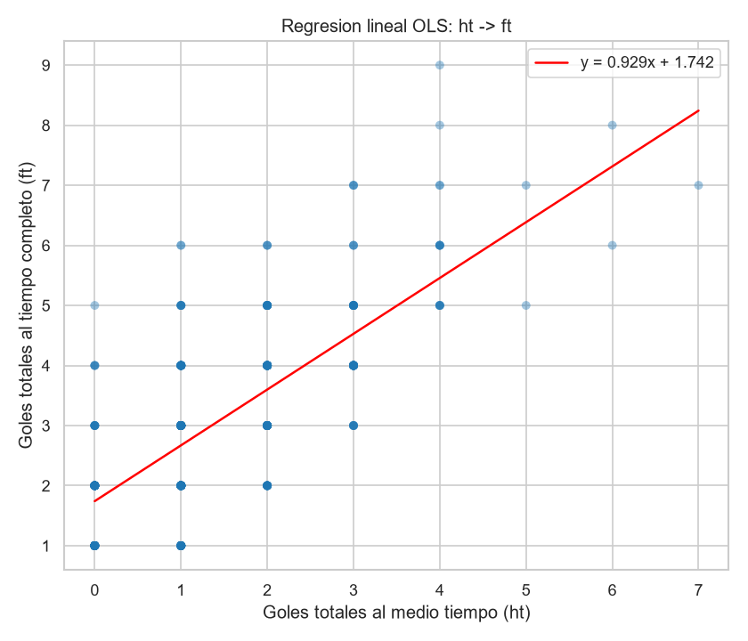
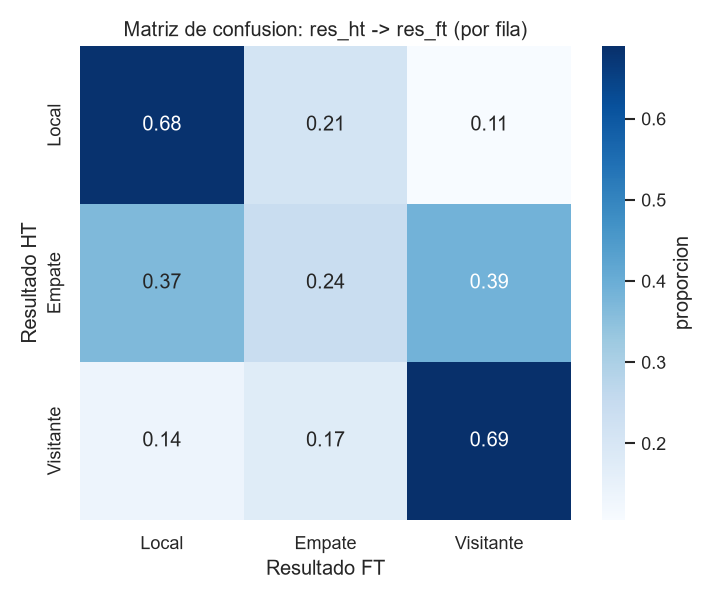
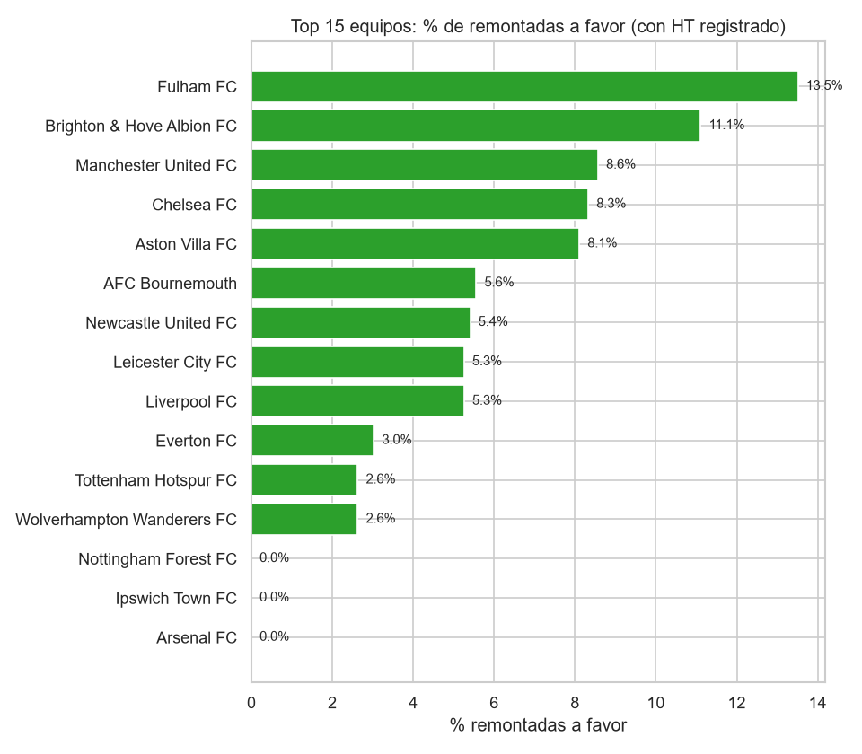
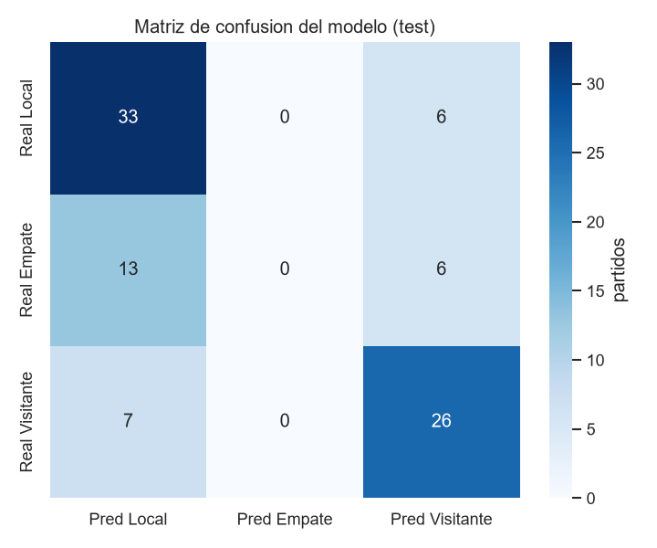
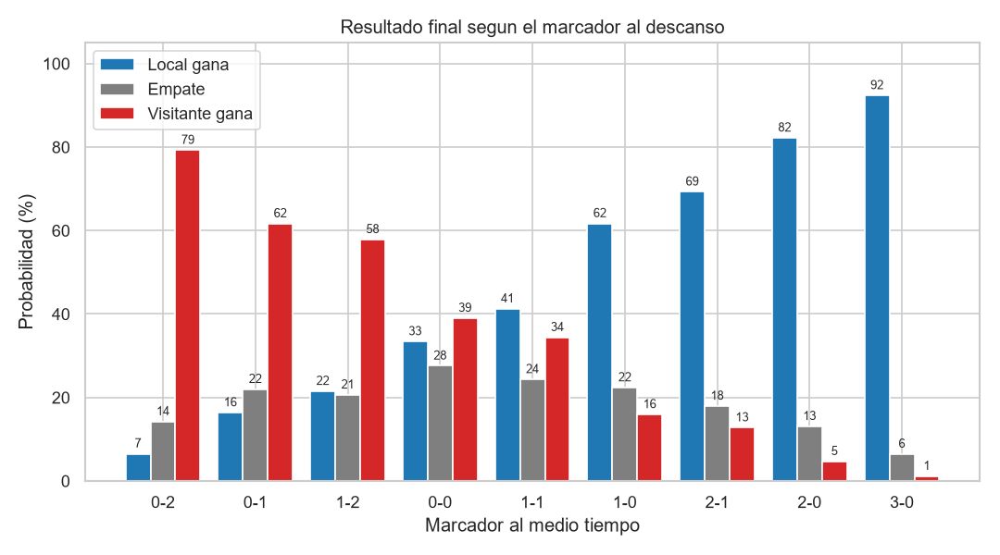

Reparación, gráficos y modelo de predicción sobre la Premier League 2024/25
Dataset: openfootball / football.json · 380 partidos
openfootball/football.json — dominio público.2024-25/en.1.json — Premier League 2024/25, 380 partidos.date, team1, team2, score.ht, score.ft (marcadores), round.¿El marcador al descanso (ht) predice el resultado final (ft)?
Y si un equipo empieza perdiendo: ¿qué tan probable es que remonte?
"score": {
"ht": [1, 0],
"ft": [2, 1]
}
La lista [g1, g2] = [goles local, goles visitante] se aplana a ht_g1, ht_g2, ft_g1, ft_g2.
null del JSON se trata como faltante: queda NaN real, sin inventar valores.date → datetime con formato YYYY-MM-DD. Si una fecha no se interpreta, queda NaT (falta fecha).Int64 nullable admite faltantes; con errors="coerce", lo que no es número (ej. "x") se vuelve NaN en vez de romper.round → texto con strip(): quita espacios laterales para no crear duplicados falsos (ej. "Arsenal " vs "Arsenal").Aquí no aparecen faltantes nuevos: las fechas son válidas y los NaN de goles vienen del null del JSON, no del parseo.
ft null → partido sin resultado final.ft < ht, team1 == team2.ht null (~16 partidos): el ft sí sirve.Imputar = rellenar el faltante con un valor (media, mediana o moda). No se hace: el faltante es "no registrado", no un valor perdible; rellenarlo aplastaría la desviación estándar.
Resultado: 380 con resultado final · 364 con ht registrado.

r = 0.71 · R² = 0.51
Cada gol extra al descanso → +0.93 goles al final, en promedio.

~69 %
Quien gana el descanso, gana el partido (Local 68 %, Visitante 69 %). El empate solo se mantiene 24 %.
Muestra el resultado, no la probabilidad por marcador ni el margen de goles.

13.5 %
Fulham remontó más: 5 de 37 partidos. La remontada es un evento poco frecuente.
Con 33–38 partidos por equipo, el % es ruidoso.
El resultado final res_ft desde la perspectiva del local: L gana local, E empate, V gana visitante.
ht_g1, ht_g2 — goles de local y visitante al descanso. Toda la info disponible al descanso.
ft_g1, ft_g2, res_ft → la respuesta con otro nombre.res_ht → no existe al predecir (se deriva del marcador).team1/team2, date, round → no aportan a la pregunta.Regresión logística multinomial · 364 partidos con ht registrado.
random_state=42 → reproducible.El baseline "no cambia" ya acierta 57 %: superarlo es el verdadero reto.
| Modelo | Accuracy |
|---|---|
| Clase mayoritaria (Local) | 0.429 |
| Resultado no cambia (ft = ht) | 0.571 |
| Regresión logística | 0.648 |
Gana a ambos baselines. Train 0.590 / test 0.648 → sin sobreajuste.
Recall: Local 0.85 · Visitante 0.79 · Empate 0.00 (nunca lo predice).


1-0 → ganas 62 % · 2-0 → 82 % · 3-0 → 92 %
Perdiendo 0-1: remontas 16 % · empate 22 % · pierdes 62 %. Con 0-2, remontas 6 % y pierdes 79 %.
Cifras de notebooks/02_analisis_dinamica_ht_vs_ft.ipynb y 04_modelo_prediccion.ipynb.